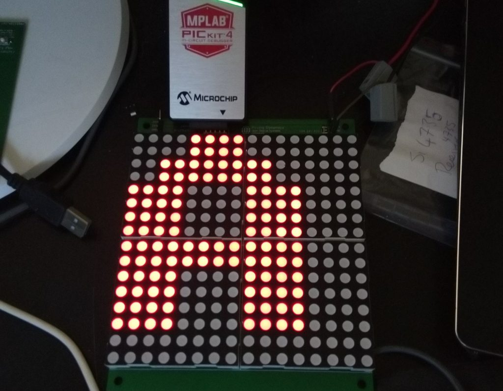
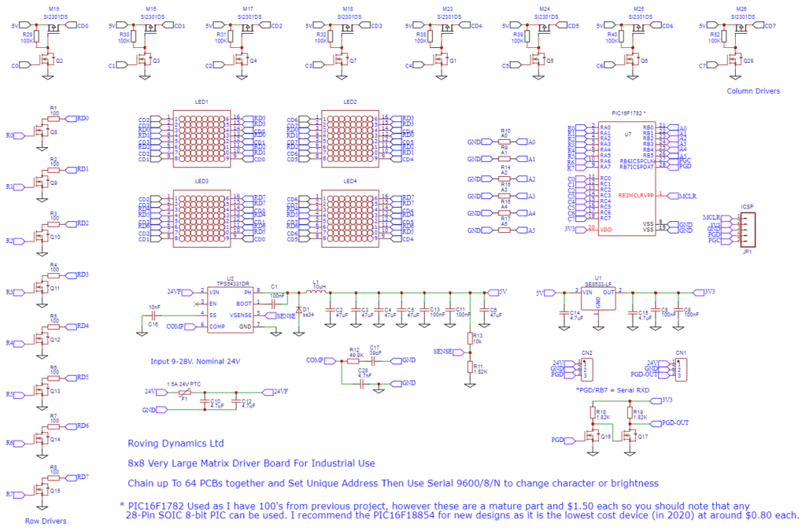
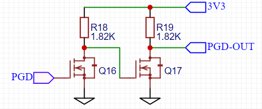

Recently required some large character displays for displaying of a 4,5 and 6 digit number behind a customised dashboard prominently displayed in several locations in the factory, the digit must be readable from very far away and needed to be around 120mm to fit in the cut-outs the carpenter has made. There are lots of these on ali-express but they dont have an easy ability to customise the size or interface so the simple solution was to make some!
The board made costs around $10 for each character using my usual JLCPCB and LCSC suppliers and were quite quick to assemble and use.

The display can be configured in size anywhere between 1 and 64 characters and so it should be easy to re-use in other remote displays (number plates, job numbers, scoreboards, counters etc)
We chain three-wires, power (9-24V), ground and a serial bus. Each board has a configurable address (0-63) and to use it you just send a five byte serial string from whatever you are using to control it (0x02 + 0x03 + address (0-63) + ASCII-CHAR + 0x04)
You can also change the brightness of the character (1=dim, 10=bright) by sending an ASCII value from dec 130 to 140. (outside the normal ASCII char set) the 8×8 font is supplied in the header file and can be modified to add custom chars etc
The connectivity is plain TTL 3V3 serial input and it doesnt transmit anything back so you only need to worry about sending the above string, so I could connect it to USB, Modbus, bluetooth or ethernet serial adaptors, raspberry pi or arduino or in my case one of my older modbus industrial boards.

As you can see it is pretty basic and consists of four $1 8×8 led modules so each pixel is actually 4 leds so we get a 4 x bigger 8×8 display. The leds are driven by 8 low side MOSFET row drivers and 8 high-side MOSFET column drivers using the cheapest 28-pin PIC I had available in my component bucket (I have hundreds of left over PIC16F1782 so anything I can build to get rid of them works well). The power supply uses the common or garden TI industrial switched regulator to produce 5V for the LEDs and we regulate this down to 3.3V for the PIC (the 5V side is going to be pretty noisy so best not to use that!), 16 pins are used for driving the LEDs, 6 used for address input and one for serial in. You set an address on each board using solderable “0 ohm” resistors or jumper wire.
EasyEDA Project here https://easyeda.com/rodyne/display
The software uses an interrupt for reading the serial line and scanning the rows and decode the character line by line from the font bitmap, currently scanning occurs around 8Khz but might up it to 15Khz to keep rodents away 🙂
MPLABX XC8 Project source files are below and work with the PIC16F1782 but it should be easy to modify to any other 8 bit pic.
https://rodyne.com/wp-content/uploads/2020/09/ChainDisplay.zip (file was already missing on rodyne.com)
Note: I haven’t actually driven more than a dozen boards so a couple of things to note if you are going to do this are:
- I am not sure of the fan-in of a PIC, but driving 64 inputs from a TTL serial output may put a little strain on the driving chip. Because of this I have added the simple MOSFET driver circuit below to each board to “re-condition” the serial signal to drive the next board in the chain. If you are only driving a few characters then this is not really required but digital signals do degrade the more inputs you drive and more boards chained together adds capacitance which will convert your nice clean serial signal into a series of crappy capacitance charge/discharge curves and which may stop the signal being read. The circuit below should eliminate this for the cost of a few cents (I do love 2N7002 MOSFETs, don’t I !) note the resistor values dont matter that much, I used the same 1.82K one I used in the power supply but anything from 1K to 10K should be OK. (Use 1K values if the environment is electrically noisy)

- The driver board should be in the same enclosure as the display boards or not too far away or the serial data signal will degrade, an easy fix for this is to lower the baud rate, as you are only sending 5 characters at a time you could go all the way down to 1200 baud and not notice any slowdown, but a better fix is to adopt the next solution.
- The best solution to all these is to use a dedicated RS485 tranceiver chip such as the MAX485 (or more likely one of the million cheaper clones) most of these can drive 128 receivers with ease. adding one of these to the board will cost about $0.20, and dont forget to pop a terminating 120 ohm resistor at the end of the chain!